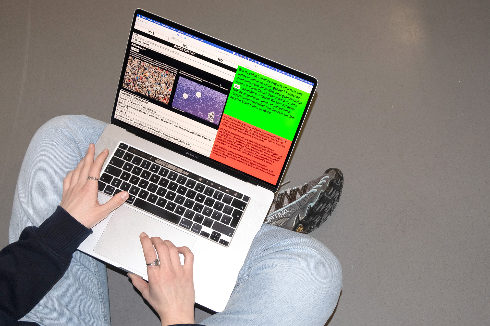
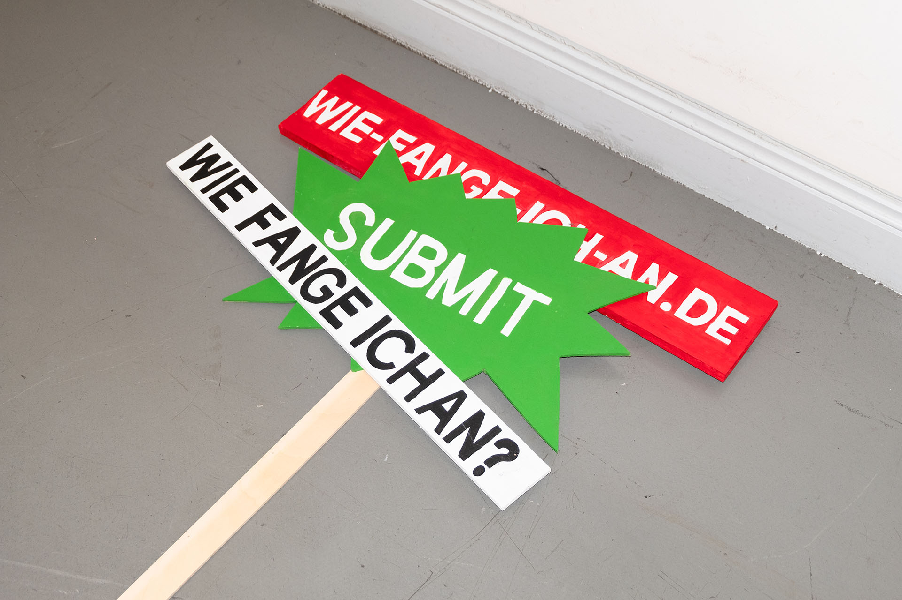
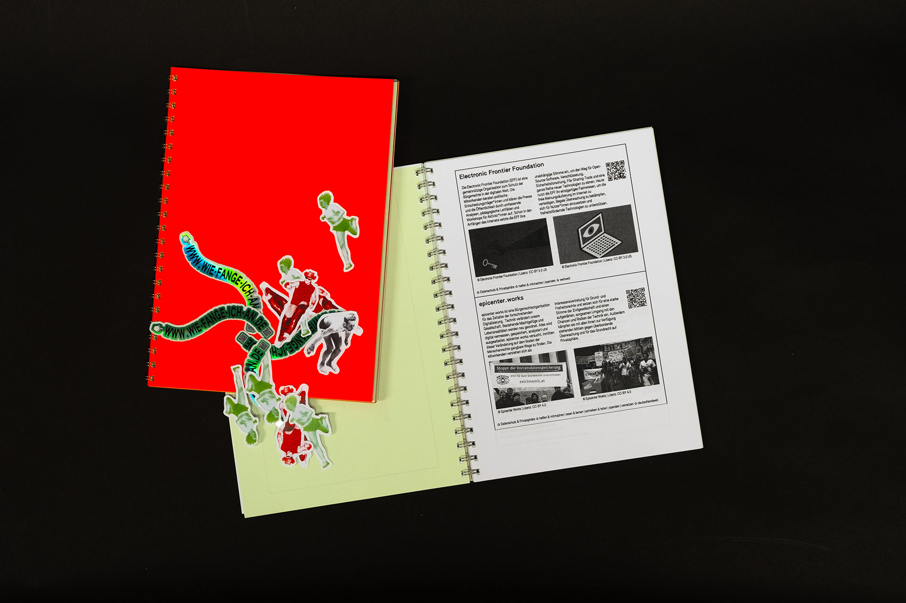
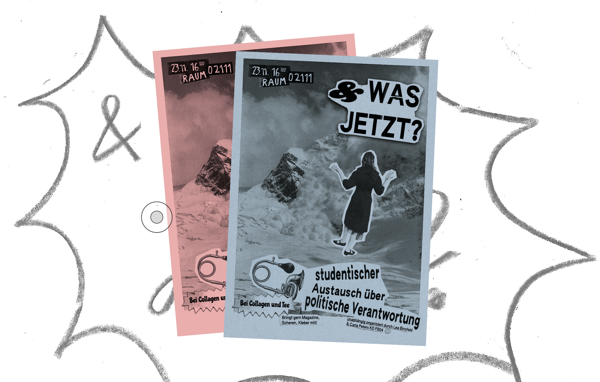
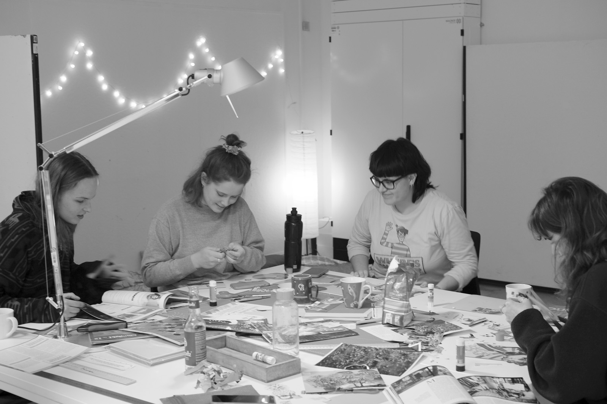

WIE FANGE ICH AN? (“How Do I Start?“) is an expanding web index featuring projects, networks, and initiatives aimed at facilitating alternative entry points into the political field in Germany. With over 150 entries, the index can be filtered by WHAT, HOW, and WHERE categories, allowing users to tailor their search to their individual interests and motivations.
Creating Spaces
The project responds to a generation seeking innovative ways to engage in politics and society. The organised student talk session WAS JETZT?“ (“What now?“) created a low-threshold, informal space for political exchange, while the students can work on zines and collages. What does a first step towards democratic engagement look like? What am I afraid of? What makes me angry?
The project is curated and hosted by Lea Binsfeld and Carla Peters





